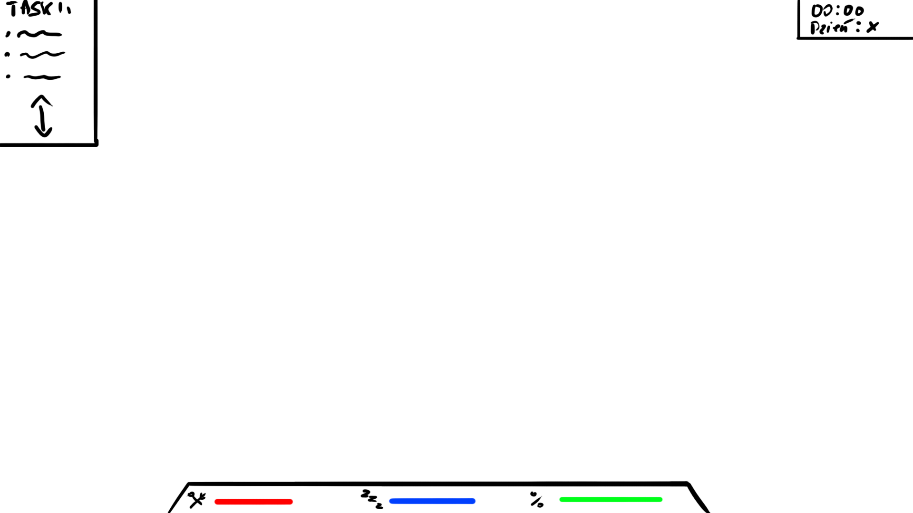
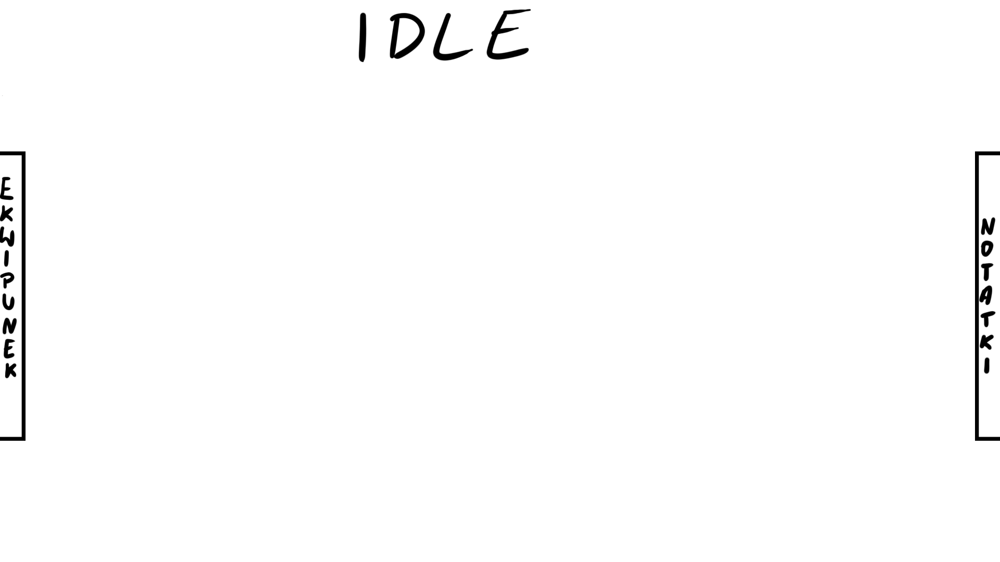
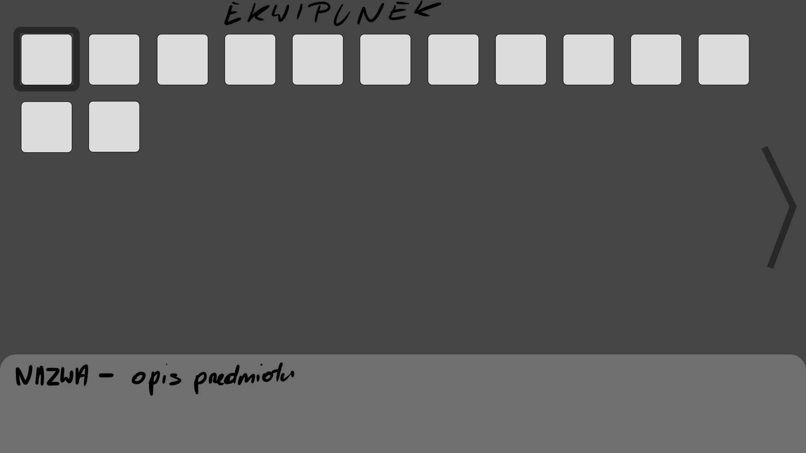
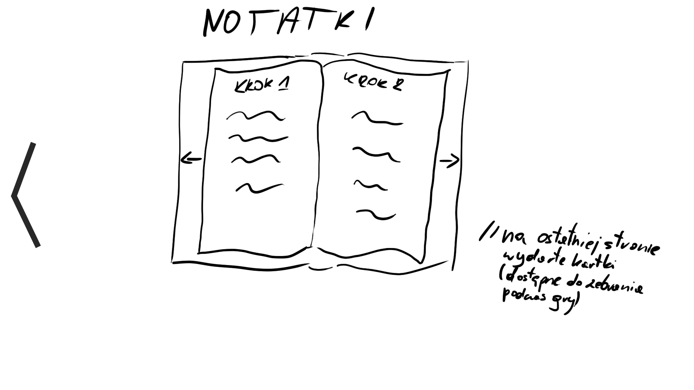

Interfejs Użytkownika
Podczas gry - minimalistyczny, casualowy interfejs Podczas craftingu - bardziej zaawansowany interfejs, ale wkomponowany w samą grę (szafa z przedmiotami)
Elementem łączącym dwa tryby gry będzie telefon, na którym znajdują się wszystkie potrzebne rzeczy (zamówienia, taski, odkryte przepisy itp.)
Note
Poniższe grafiki nie aktualne, do zmiany w następnym update.
Rozgrywka
Szkic interfejsu gry

Jak wiele zakrywa interfejs użytkownika
Około 10-20% ekranu, tak aby gracz zbytnio nie rozpraszał się podczas gry
Jakie Statystyki będą wyświetlane i gdzie
Głód, sen, promile. Na dole ekranu.
Jakie zdarzenia mają się wykonywać po naciśnięciu odpowiednich przycisków
...
Szkic interfejsu craftingu
IDLE

EKWIPUNEK

NOTATKI

Jak wiele zakrywa interfejs użytkownika
Około 10% ekranu przed rozwinięciem, znaczna większość po rozwinięciu
Menu
Szkic interfejsu
TBDJakie zdarzenia mają się wykonywać po naciśnięciu odpowiednich przycisków
TBD
Sklep
TBD